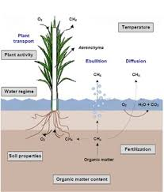

Emisiones al aire
No emite CO2 en la generación eléctrica. Pero emite gas metano si el área inundada es boscosa y se descompone la vegetación (el metano es un gas de efecto invernadero 30 veces mas dañino que el CO2).
Uso del agua
Intensivo en la extracción del carbón para reducir las impurezas, e intensivo en la combustión para el enfriamiento de las turbinas en las plantas termoeléctricas. La extracción de carbón también afecta irreversiblemente lagos, ríos y ecosistemas acuáticos que inutiliza para otros usos.
Descarga de agua
Las represas afectan los ríos, los ecosistemas y las personas que dependen de los territorios inundados. El agua a menor temperatura y con menos oxígeno en los embalses destruye la fauna aguas arriba y aguas abajo. En periodos de sequía y escasez hídrica se dificulta la generación eléctrica, causando inseguridad en el abastecimiento.